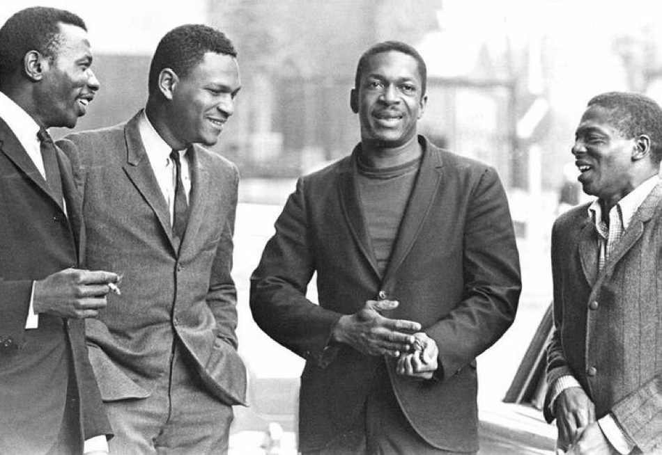
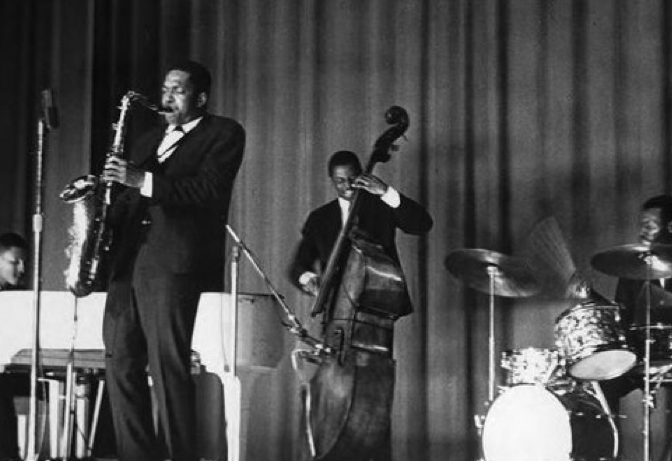

One of my top picks of 2019 was a "new" release by The John Coltrane Quartet. Called Blue World, it was an album of songs recorded in 1964 as a soundtrack for a Quebecois film called Le chat dans le sac. Apparently, the music was shelved by the filmmakers and then went unreleased until September of last year.
This was a huge find for Coltrane fans, as this was smack dab in the middle of the era of the "classic" quartet of McCoy Tyner on piano, Jimmy Garrison on bass, and Elvin Jones on drums. This is considered to be one of the all time greatest groups to ever play jazz (hell, ANY genre), and 1964 was when the group was really starting to dig in and follow Trane down his relentless quest for musical enlightenment.
The "Blue World" session occurred just months prior to Coltrane's masterwork A Love Supreme, an album that signalled a shift in his work from powerful "sheets of sound" to an almost spiritual reaching, one that would eventually result in the polarizing free jazz that he was playing around the time of his death in 1967. But in 1964, the music had BOTH elements, the perfect combination of familiar and unfamiliar, structure and freedom, earthly and astral.
The title track is a perfect example - Tyner's persistent, big lush multi-tonal chords and Garrison's understated bass providing all kinds of room for Jones to work with on drums, and Trane to search, reach, stretch out, and just generally channel some sort of higher musical power.
I chose this track for this mix not just for the brilliance - it is also a tribute to Tyner, who died in March. One of my favorite pianists ever, he was really the only one who could find chords that could hang with Trane's musical explorations. After the break up of the quartet, Trane's wife Alice played piano with his new group, but most of his music was without any piano at all. Tyner had an incredible, long solo career but will always be remembered as the anchor of the Classic Quartet.